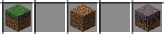
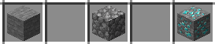
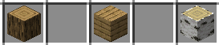
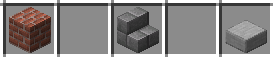
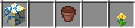

Blocs :
Sur cette page nous vou montrons les blocs les plus importants de minecraft !
1. Blocs de Terre : Les blocs de terre sont parmi les plus fondamentaux. On les trouve partout dans le monde de Minecraft. Ils constituent le sol de base et peuvent être récoltés à l'aide d'une pelle.
2. Pierre et Minerais : La pierre forme le socle du monde, tandis que les minerais tels que le fer, le charbon et le diamant sont enfouis dans les profondeurs. L'exploration des cavernes est nécessaire pour récolter ces précieuses ressources.
3. Bois et Arbres : Les arbres peuplent le monde, fournissant du bois essentiel à la construction. Différents types d'arbres offrent des planches de bois variées pour divers usages.
4. Blocs de Construction : Des briques aux dalles, en passant par les escaliers, Minecraft offre une variété de blocs de construction. Ces matériaux permettent aux joueurs de laisser libre cours à leur créativité architecturale.
5. Blocs de Décoration : Des fleurs colorées aux blocs de terre cuite, Minecraft propose une myriade de blocs de décoration pour embellir les constructions. Des tapis colorés aux vases de fleurs, la personnalisation est infinie.
L'univers de Minecraft est façonné par l'immense variété de blocs disponibles. Ces images ne sont qu'un aperçu de la richesse et de la diversité qui attendent les joueurs dans ce monde cubique.